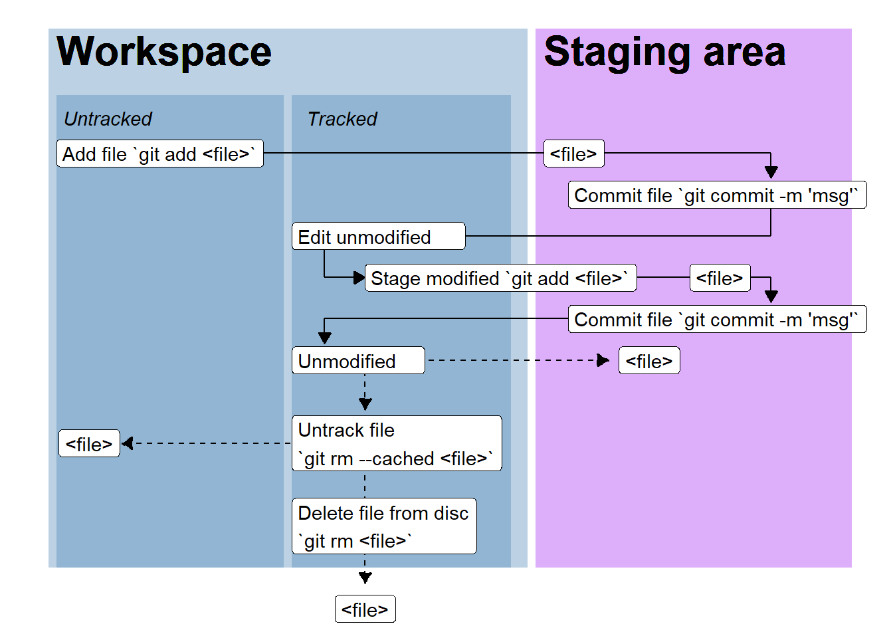

Code
library(ggplot2); library(ggtext)
ggplot(data.frame(x = c(0,1), y = c(0,1)), aes(x, y)) +
scale_y_continuous(limits = c(0.3, 1)) +
# Workspace
geom_rect(aes(xmin = 0.01,
xmax = 0.6,
ymin = 0.35,
ymax = 1),
fill = "steelblue",
alpha = 0.2) +
geom_rect(aes(xmin = 0.02,
xmax = 0.3,
ymin = 0.35,
ymax = 0.92),
fill = "steelblue",
alpha = 0.2) +
geom_rect(aes(xmin = 0.31,
xmax = 0.58,
ymin = 0.35,
ymax = 0.92),
fill = "steelblue",
alpha = 0.2) +
annotate("richtext",
x = c(0.02, 0.32),
hjust = 0,
y = 0.89,
label = c("*Untracked*", "*Tracked*"),
fill = NA, label.color = NA) +
annotate("richtext",
x = 0.02,
y = 0.97,
label = "**Workspace**",
hjust = 0,
size = 8,
fill = NA, label.color = NA, # remove background and outline
label.padding = grid::unit(rep(0, 4), "pt")) + # remove padding) +
# Stage area
geom_rect(aes(xmin = 0.61,
xmax = 1,
ymin = 0.35,
ymax = 1),
fill = "purple",
alpha = 0.2) +
annotate("richtext",
x = 0.62,
y = 0.97,
label = "**Staging area**",
hjust = 0,
size = 8,
fill = NA, label.color = NA, # remove background and outline
label.padding = grid::unit(rep(0, 4), "pt")) + # remove padding) +
## Labels and arrows
annotate("segment", y = c(0.85, 0.85),
yend = c(0.85, 0.82),
x = c(0.1, 0.9),
xend = c(0.9, 0.9),
arrow = arrow(length = unit(c(0, 2.5), "mm"), type = "closed")) +
geom_label(aes(x = 0.62, y = 0.85 , label = "<file>"),
hjust = 0) +
geom_label(aes(x = 0.02, y = 0.85 , label = "Add file `git add <file>`"),
hjust = 0) +
annotate("segment",
y = c(0.8,0.75),
yend = c(0.75, 0.75),
x = c(0.9,0.9),
xend = c(0.9, 0.48),
arrow = arrow(length = unit(c(0, 2.5), "mm"), type = "closed")) +
annotate("segment",
y = c(0.75, 0.7),
yend = c(0.7, 0.7),
x = c(0.35, 0.35),
xend = c(0.35, 0.4),
arrow = arrow(length = unit(c(0, 2.5), "mm"), type = "closed")) +
geom_label(aes(x = 0.65, y = 0.8 , label = "Commit file `git commit -m 'msg'`"),
hjust = 0) +
geom_label(aes(x = 0.31, y = 0.75 , label = "Edit unmodified "),
hjust = 0) +
annotate("segment",
y = c(0.7, 0.7),
yend = c(0.7, 0.67),
x = c(0.5, 0.9),
xend = c(0.9, 0.9),
arrow = arrow(length = unit(c(0, 2.5), "mm"), type = "closed")) +
geom_label(aes(x = 0.8, y = 0.7 , label = "<file>"),
hjust = 0) +
geom_label(aes(x = 0.40, y = 0.7 , label = "Stage modified `git add <file>`"),
hjust = 0) +
annotate("segment",
y = c(0.65,0.65),
yend = c(0.65, 0.62),
x = c(0.8, 0.35),
xend = c(0.35, 0.35),
arrow = arrow(length = unit(c(0, 2.5), "mm"), type = "closed")) +
geom_label(aes(x = 0.65, y = 0.65 , label = "Commit file `git commit -m 'msg'`"),
hjust = 0) +
## Possible routs from unmodified
## Modify and commit
## Remove (untrack)
annotate("segment",
y = c(0.6, 0.6),
yend = c(0.6, 0.54),
x = c(0.4, 0.4),
xend = c(0.70, 0.4),
lty = 2,
arrow = arrow(length = unit(c(2.5, 2.5), "mm"), type = "closed")) +
## File in staging area
geom_label(aes(x = 0.75, y = 0.6 , label = "<file>"),
hjust = 0.5) +
## Untrack file
annotate("segment",
y = c(0.5),
yend = c(0.5),
x = c(0.4),
xend = c(0.1),
lty = 2,
arrow = arrow(length = unit(c(2.5), "mm"), type = "closed")) +
geom_label(aes(x = 0.31, y = 0.60 , label = "Unmodified "),
hjust = 0) +
## Remove file (delete)
annotate("segment",
y = c(0.5),
yend = c(0.33),
x = c(0.4),
xend = c(0.4),
lty = 2,
arrow = arrow(length = unit(c(2.5), "mm"), type = "closed")) +
annotate("label",
x = 0.31, y = 0.5 ,
label = "Untrack file\n`git rm --cached <file>`",
hjust = 0) +
## File in trash
geom_label(aes(x = 0.4, y = 0.30 , label = "<file>"),
hjust = 0.5) +
## File untracked
geom_label(aes(x = 0.06, y = 0.5 , label = "<file>"),
hjust = 0.5) +
geom_label(aes(x = 0.31, y = 0.40 , label = "Delete file from disc\n`git rm <file>`",
hjust = 0)) +
theme_void()
git add <file> and comitted to the local repository by git commit. The file is edited and is marked as modified after which it is staged (git add <file>). Again, staged modifications are commited and the file is once again marked as unmodified until edited. Files may be untracked from the repository or deleted from disc using git rm with or without the --cached option.